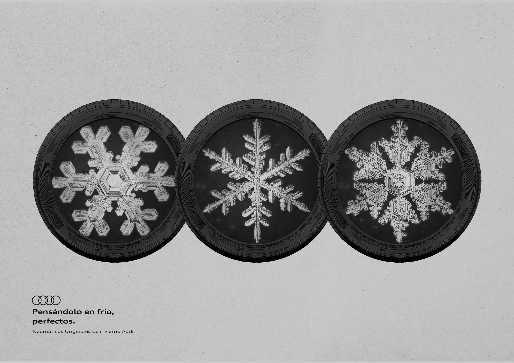

Campaña Neumáticos Originales Audi 2022
Concepto: Creyentes de lo imposible.
> IG Stories / Content Orgánico / Digital / Print
> Brief: Presentar la colección de neumáticos de invierno Audi.
Campaña Neumáticos Originales Audi 2021
Concepto: Pensándolo en frío, insuperables.
> IG Stories / Content Orgánico / Digital / Print
> Brief: Presentar la colección de neumáticos de invierno Audi.
